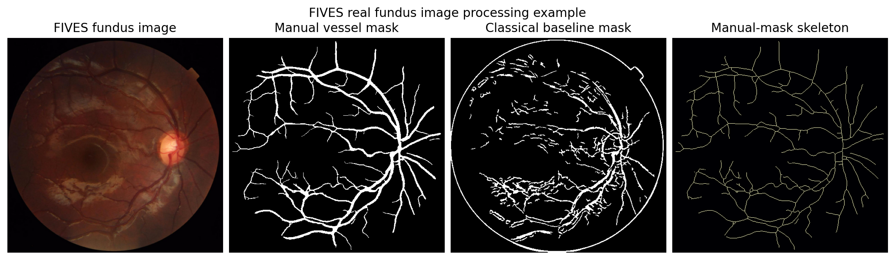
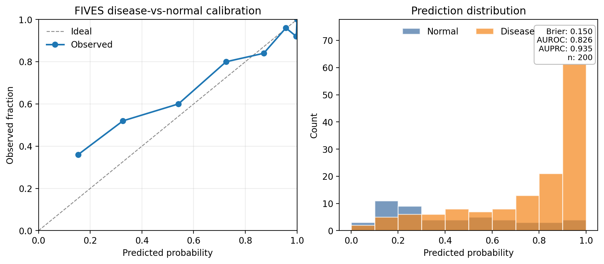

ROSE OCTA vessel segmentation dataset
Used here as the OCTA computer-vision scaffold for local ingestion, manual-mask feature extraction, and skeletonization. ROSE-derived image examples are not published by default.
Zenodo recordretivasc prototype report
This report shows how the package processes retinal vascular data: it pairs images with vessel masks, runs a simple segmentation baseline, skeletonizes the vessels, extracts interpretable vascular features, and demonstrates careful validation on a larger public fundus dataset.
Executive summary
This is a working demonstration of retinal vessel processing, not a clinical diagnostic. In plain terms, it traces vessels at the back of the eye, reduces their shape to a small set of interpretable numbers, and shows how those numbers can be evaluated with honest train/test splits and calibration checks.
data/raw/.The public datasets here are stand-ins for demonstrating the processing workflow. The report does not claim Alzheimer's diagnosis, ADRD risk prediction, or plasma biomarker association from FIVES or ROSE.
Dataset roles
The two public datasets have different jobs in this demo. ROSE is used to exercise OCTA vessel-mask ingestion and feature extraction. FIVES is used for the real-image walkthrough and the quantitative modeling example because it has a larger public train/test split with disease-vs-normal labels.
Used here as the OCTA computer-vision scaffold for local ingestion, manual-mask feature extraction, and skeletonization. ROSE-derived image examples are not published by default.
Zenodo recordUsed here for the larger-scale modeling and calibration demonstration on manual vessel masks and disease-vs-normal labels.
Scientific Data articleProcessing example
The figure below uses a real local FIVES image and its manual vessel mask to show the processing stages. ROSE-derived visual panels remain local-only by default because the ROSE archive has more restrictive redistribution terms.

Technical overview
The package is intentionally compact: it uses transparent image-processing and statistical baselines so the evidence trail is easy to inspect.
The segmentation baseline is an untrained Frangi ridge detector followed by thresholding and morphology cleanup. It is a transparent floor, not a state-of-the-art model.
segment.pyManual vessel masks are converted into a small vascular fingerprint: density, skeleton length, branch density, fractal dimension, tortuosity, and component count.
features.pyThe mask is thinned to a one-pixel centerline so branch points, endpoints, network length, and curviness can be measured consistently.
skeleton.pyDice, IoU, sensitivity, and specificity compare a predicted vessel mask against a manual vessel tracing without being dominated by background pixels.
metrics.pyThe FIVES model standardizes the vascular features and fits a small L2-regularized logistic regression with class balancing.
notebook 02AUROC and AUPRC describe ranking. The Brier score and calibration curve ask whether predicted probabilities are numerically trustworthy.
plotting.pyFIVES modeling discipline
These metrics summarize a simple disease-vs-normal fundus-label model trained and evaluated on the official FIVES image-level split.

Model context
FIVES supplies fundus vessel masks and disease labels. The model is a deliberately small logistic baseline over interpretable vascular features. Its purpose is to show split hygiene, metric reporting, and calibration mechanics that will be reused when ADRD-relevant data arrive.
FIVES is split here using its official image-level train/test partition. The leakage check confirms image-disjoint, not patient-disjoint, splits: the public FIVES release does not publish patient identifiers, so subject-level splitting is not possible and the official split may place two eyes of one person across train and test. With 800 images from 573 subjects this is a known limitation that can modestly inflate performance. The disease-vs-normal base rate in the FIVES test set is about 75 percent, so AUPRC is prevalence-driven and AUROC is the cleaner headline.
End-to-end data audit
The audit follows the package from local image files to masks, skeletons, features, baseline models, calibration, and the final static report. It is rendered as HTML so it remains readable, searchable, and paired with the code paths that perform each operation.
Ingest
The package first builds a tidy table where each retinal image is paired with its matching hand-drawn vessel mask.
ROSE and FIVES loaders detect official folder layouts or read a local manifest. They normalize image ids, mask paths, labels when supplied, layer metadata, and split groups without downloading or committing medical images. Local data are expected under data/raw/rose/ and data/raw/fives/.
Output
manifest table with image_path and mask_path
src/retivasc/io.pyload_rose_manifest
src/retivasc/io.pyload_fives_manifestPrepare
Color images are converted to grayscale, brightness is normalized, and large masks are resized for a quick demo run.
The preprocessing helpers standardize inputs before segmentation and feature extraction, while preserving binary mask semantics.
Output
normalized arrays for fast processing
src/retivasc/preprocess.pyensure_grayscale
src/retivasc/preprocess.pyresize_mask_to_max_dimBaseline
A classic ridge detector lights up thin tube-like structures, thresholds that response, and removes small specks.
The Frangi filter is used as an untrained, GPU-free floor for vessel detection. For this demo it is a baseline, not the final computer-vision claim.
Output
binary baseline vessel mask
src/retivasc/segment.pyclassical_vesselness_mask
src/retivasc/segment.pycleanup_maskGraph
The vessel map is thinned to a centerline, then branch points and endpoints are marked so the vascular network can be measured.
Skeletonization turns vessel blobs into graph-like structure, making length, branching, and tortuosity easier to quantify.
Output
one-pixel centerline plus branch points
src/retivasc/skeleton.pyskeletonize_mask
src/retivasc/skeleton.pybranchpoint_maskMeasure
Each mask is reduced to interpretable numbers: vessel density, centerline length, branch density, fractal dimension, tortuosity, and component count.
These feature definitions are intentionally species-agnostic so the same code can later be applied to human and mouse retinal images.
Output
vascular fingerprint per image
src/retivasc/features.pyextract_vascular_features
src/retivasc/features.pysegment_tortuosityScore
Predicted vessel masks can be compared against manual masks to score overlap and separate missed vessels from false vessel pixels.
Dice and IoU focus on foreground vessel overlap, while sensitivity and specificity separate true-vessel recovery from background rejection.
Output
Dice, IoU, sensitivity, specificity
src/retivasc/metrics.pydice_score
src/retivasc/metrics.pyiou_scoreSplit
The model is trained on one group of images and tested on a held-out group, with explicit checks against group overlap.
FIVES only supports the official image-level split in the public release. The report states that this is image-disjoint, not patient-disjoint.
Output
train/test groups and leakage checks
src/retivasc/splits.pyassert_group_split_safeModel
A simple logistic regression uses the vascular feature table to separate diseased from normal FIVES fundus images.
The scikit-learn pipeline standardizes features, applies L2-regularized logistic regression, and uses class balancing for the 75/25 test-set base rate.
Output
disease-vs-normal logistic baseline
notebooks/02_fives_modeling_calibration_demo.pymake_pipeline
StandardScaler + LogisticRegressionValidate
The demo reports whether the baseline ranks examples well and whether its probabilities are trustworthy.
AUROC and AUPRC are ranking metrics. Brier score and the reliability diagram test probability calibration, which matters for any future risk model.
Output
AUROC, AUPRC, Brier score, calibration curve
src/retivasc/plotting.pyplot_calibration
sklearn.metricsPublish
The report collects the figures, metrics, citations, and caveats into one static artifact that can be inspected locally or published from docs.
The public report can include a real FIVES processing example generated from local data. ROSE-derived image panels remain local-only by default.
Output
reports/retivasc_pi_demo.html and docs/index.html
src/retivasc/report_html.pybuild_report